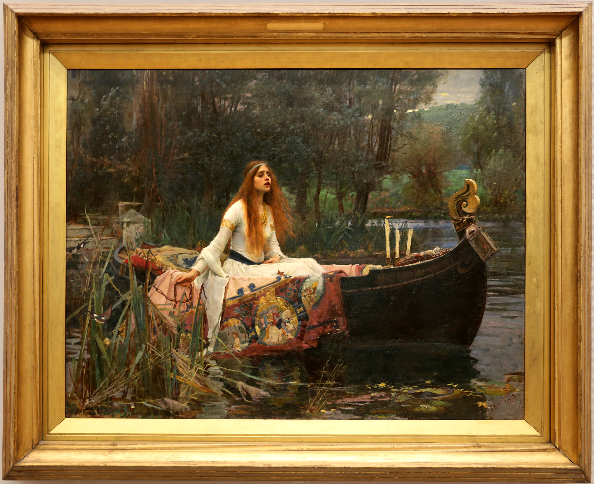

The Lady of Shalott
Not simply a woman leaving by boat, but a life stepping out of its mirror.
Composition: the boat as a moving frame
The boat hugs the lower edge, placing us at water level. The figure travels from lower left toward centre-right; face, hands, and prow form a slow forward line. Reeds and trees tighten the space, while the distant river leaves a narrow exit. Candle, lantern, and prow-cross punctuate the scene as life, passage, and death.
Colour: a complementary spark over cold water
Moss green, blue-grey, and umber create a restrained analogous harmony. The lantern and red fabric interrupt it with a warm, high-chroma accent complementary to green. The pale dress lifts the figure from the water. Borrow this palette: 60% moss #596347 + 25% river blue-grey #667477 + 10% lantern red #A33A2E + 5% candle gold #D39A45. For clothing: olive outer layer, blue-grey base, one brick-red accent, trace of ivory.
Light and technique
Diffuse sky light opens the landscape; candle and lantern add two fragile points of human warmth. Controlled handling describes cloth, wood, and skin, while broken brushwork across water, reeds, and leaves lets observation become fable.
Artist and why it moves
Waterhouse (1849–1917), born in Italy and active in Britain, worked within the Pre-Raphaelite orbit. The painting responds to Tennyson’s 1832 poem. She leaves the mirror that showed her only other people’s lives, choosing the world at the cost of cold and death. Freedom is painted lightly; fallen leaves give it weight.
Source and rights
Original: John William Waterhouse, The Lady of Shalott, 1888, Tate Britain, N01543. Image: photographed by Sailko, Wikimedia Commons, CC BY 3.0 (attribution and licence link required). Copyright belongs to the original artist, photographer, and relevant rights holders; follow the source terms. Appreciation by Kecheng Art.